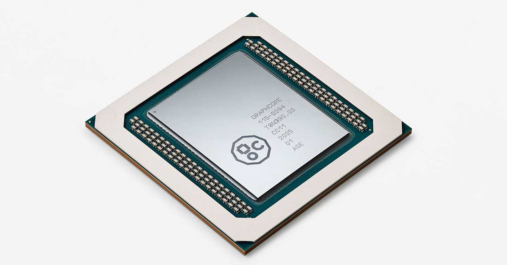
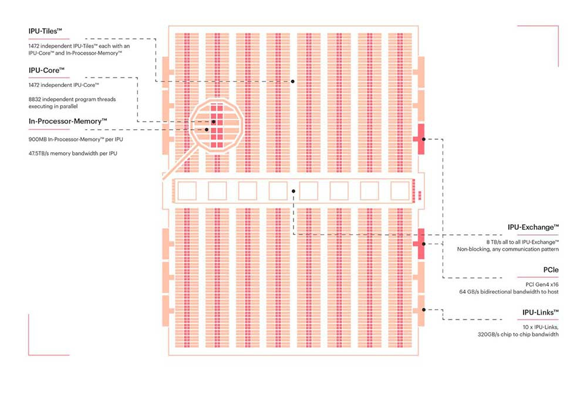
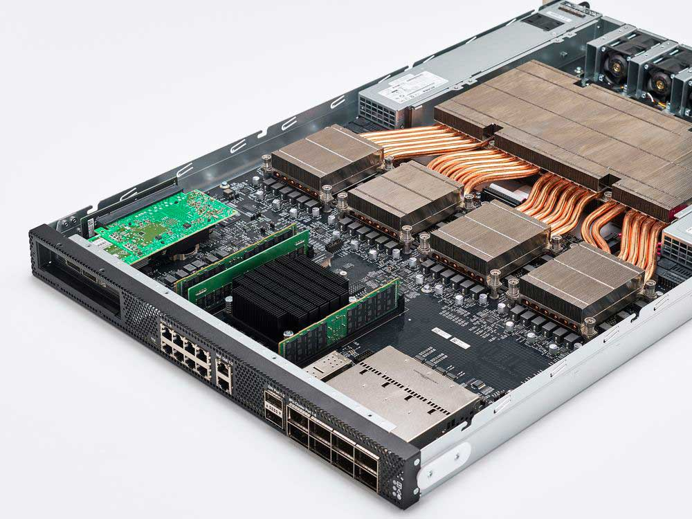
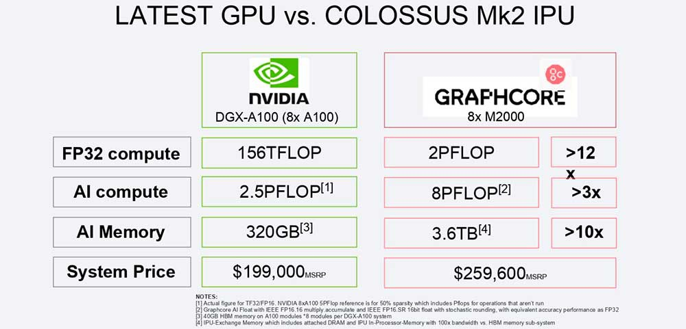

Puedes ser que hayas conocido a Intel con sus procesadores como el I9-10900K o la empresa AMD con sus procesadores llamado Ryzen pero alguna vez haz conocido una empresa pequeña que pueda ser capaz de crear un chip que supero a el de Nvidia hace meses que cuenta con 54.000 millones de transistores,a cambio este chip llamado GC200 de la empresa Graphcore tiene 59.400 millones de transistores, si quiere saber que puede hacer este procesador que te aseguro que ni conoces, pues quédate hasta el final de este artículo, para que pueda saber lo que es capaz que los Ryzen ni INTEL puedan hacer.
Podríamos alargar el artículo con todas las características que lleva este chip de Graphcore, pero aquí te resumiremos los detalles más importante que ofrece este chip, pero si quieres saber absolutamente todo lo que pueda hacer este procesador puedes ver el video que vamos a preparar, por aquí te dejo la páginaoficial en donde sacamos la información.
¿Qué puede hacer este procesador que otros no pueden?
Primero que todo, antes de nombrarte la cantidad de hilos y núcleos que tiene este chip vamos por lo primero de que está compuesto. Obviamente como todo sabemos un procesador esta compuesto por transistores, como sabemos, es utilizado para entregar una señal de salida en respuesta a una señal de entrada.Todo bien hasta ahora, con esto en mente la computadora codifica todo los datos, tales como cadenas de caracteres, o cadenas de bits se le conoce como código binario, Por si no sabes que es código binario es como lee la computadora de todas las instrucciones que haga el procesador.
Ahora sabiendo todo esto te podrás imaginar el poder de procesamiento que tiene este chip, ya que contiene 59.400 millones de transistores frente a los 54,2 mil millones de NVIDIA…¿No te sorprende?, tranquilo hay más cosas de seguro te va a impresionar así que sigue leyendo el artículo hasta el final para que no pierda lo más importante.
Desde el mundo gamer siempre tendemos a pensar que NVIDIA incluye los chips más avanzados de la industria, como así es, pero lo hace dentro del mundo gaming. Fuera de él la compañía tiene varios competidores que pueden plantarle cara, como es el caso de Graphcore.
En una arquitectura de 7 nm, el procesador GC200 integra en su interior hasta 1.472 núcleos que permiten 8.832 hilos paralelos separados. Es decir, con un -0,36% de área han logrado un 9,59% más de transistores. Pero, ¿qué incluye dicho chip? De entrada incluirá 1472 IPU, donde cada uno de ellos tendrá sus núcleos específicos y memoria destinada. En concreto, Graphcore asegura que cada chip porta 1472 Cores por procesador, donde cada IPU tiene hasta 6 subprocesos que se pueden ejecutar totalmente en paralelo, por lo que el número de hilos/procesos totales asciende hasta los 8832 por cada chip.
Como decimos, cada chip tiene una serie de memoria integrada en él, 900 MB en concreto, y aunque es una cifra pequeña, la compañía ha intentado centrar sus esfuerzos en el ancho de banda de la misma, con hasta 450 GB de densidad y un ancho de banda sin precedentes de 180 TBytes / seg. Como resultado, la memoria de intercambio de IPU ofrece una ventaja de más de 10x en densidad junto con una ventaja de más de 100x en ancho de banda de memoria en comparación con los últimos productos de GPU de 7nm.¿Sorprendente no?
Como leíste, lo ha dicho la misma empresa, con las siguientes palabras:
El número de corporaciones, organizaciones e instituciones de investigación que utilizan los sistemas Graphcore está creciendo rápidamente e incluye Microsoft, Oxford Nanopore, EspresoMedia, la Universidad de Oxford, Citadel y Qwant.
En sí Nvidia no está en problema, vendría siendo cuando esté publicado dicho producto allí si tendría que colocar manos a la obra. Por desgracia no se han facilitado datos de consumo, así que no se pueden establecer comparativas de eficiencia, ya que solo tenemos los 400 vatios del A100 de momento. Los envíos comenzarán a partir del 4T de este 2020, así que NVIDIA tiene trabajo que hacer si pretende competir contra Graphcore en Inteligencia Artificial.
Cada máquina IPU M2000 funciona con cuatro de nuestros nuevos procesadores de IPU Colossus ™ Mk2 GC200 de 7 nm y es totalmente compatible con nuestra pila de software Poplar®. Si, como leistes, tiene su propio software de inteligencia artificial.
¿Te interesó el artículo? si es así, puedes seguirnos en Facebook o nuestro canal de Youtube Donde recibirás artículos y videos relacionado con la tecnología.
Quizas te puede interesar